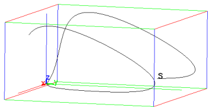

18.2.4 Linear regression
Given a set of points (x0,y0),…,(xn−1,yn−1), linear
regression finds the line y=mx+b that comes closest to passing
through all of the points; i.e., that makes
| | √ | |
| (y0−(m x0+b))2+⋯+(yn−1−(m xn−1+b))2 |
|
as small as possible.
The linear_regression
command finds the linear regression of a set of points.
-
linear_regression takes two arguments:
-
xcoords, a list of x-coordinates.
- ycoords, a list of y-coordinates.
You can combine two arguments into a matrix with two columns (each
list becomes a column of the matrix).
- linear_regression(xcoords,ycoords)
returns a sequence m,b of the slope and y-intercept of the
regression line.
Example
| linear_regression([[0,0],[1,1],[2,4],[3,9],[4,16]]) |
or:
| linear_regression([0,1,2,3,4],[0,1,4,9,16]) |
which means that the line y=4x−2 is the best fit line.
The linear_regression_plot
command draws the best fit line.
-
linear_regression_plot takes two arguments:
-
xcoords, a list of x-coordinates.
- ycoords, a list of y-coordinates.
You can combine two arguments into a matrix with two columns (each
list becomes a column of the matrix).
- linear_regression_plot(xcoords,ycoords)
draws the line of best fit through the points. It will also
give you the equation at the top, as well as the R2 value, which
is
(The R2 value will be between 0 and 1 and is one measure of how
good the line fits the data; a value close to 1 indicates a good fit,
a value close to 0 indicates a bad fit.)
Example
| linear_regression_plot([0,1,2,3,4],[0,1,4,9,16]) |
